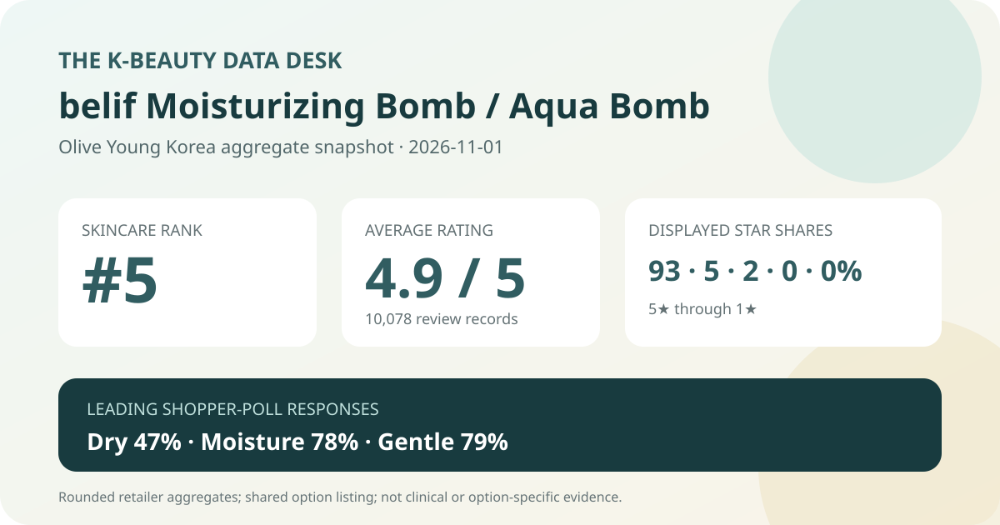
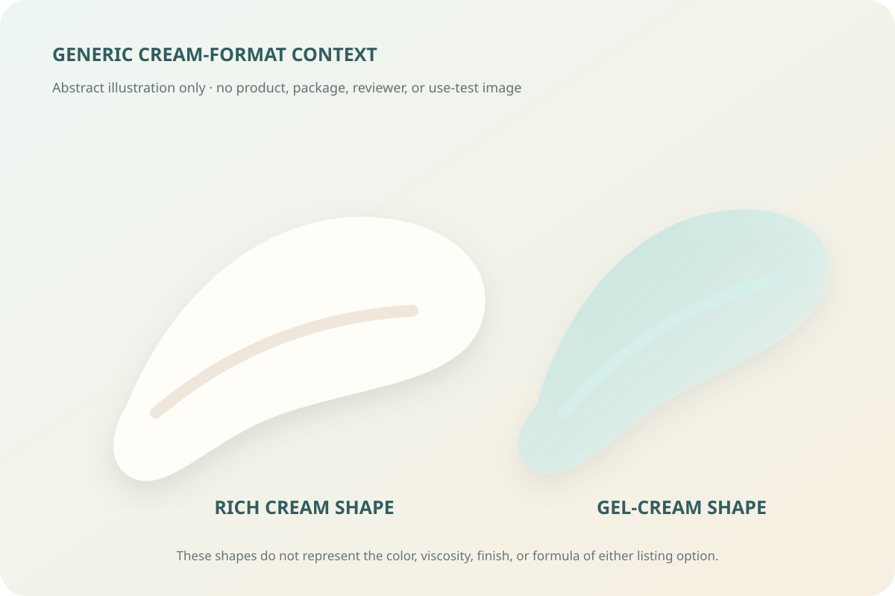

Data captured November 1, 2026. This analysis uses the retailer's displayed aggregate rating, star distribution, shopper polls, and anonymous automated themes. It does not copy or translate individual review text, names, or photos, and it makes no claim of firsthand use.

The short version: The option-based belif Moisturizing Bomb / Aqua Bomb listing appeared at number 5 in the captured skincare sales ranking. Its product header and official detailed review statistics agreed on 4.9 out of 5 from 10,078 records. The shopper polls leaned dry but were nearly split with combination skin, while moisture and gentle-feeling responses led their respective panels. Because two cream plans share this listing, none of the aggregate signals can be assigned to one option alone.
The displayed average was 4.9 stars. The product header showed 10,078 review records, and the official detailed review statistics repeated both the 4.9 score and the 10,078-record total. That agreement matters because the listing offered more than one cream plan. It reduces the risk of mixing this page with a different listing, but it does not solve the option-attribution problem inside the shared aggregate.
The detailed statistics displayed these rounded star shares:
The rows total 100% as displayed. Five-star selections dominate, while seven percentage points sit below five stars. That is a strongly favorable retail pattern, not a 93% success rate. The interface does not establish that every record came from a verified buyer, followed the same routine, used the same companion products, or selected the same belif cream plan.
The average is rounded to one decimal place, and the shares are rounded whole percentages. They should not be reverse-engineered into exact reviewer counts. Nor should the large record base be mistaken for a controlled experiment: volume can make a retail sentiment pattern more stable without turning it into causal evidence.
The skin-type poll displayed 47% dry, 45% combination, and 8% oily. Dry was the largest label, but the two-point gap over combination is narrow. The responsible reading is that both dry and combination respondents were strongly represented in the captured poll, not that the listing is proven better for dry skin.
These percentages do not reveal the poll denominator, whether every review answered the question, or how answers divide between Moisturizing Bomb and Aqua Bomb. They also do not show climate, season, application amount, routine complexity, or sensitivity history. An oily-skin share of 8% means fewer displayed responses carried that label; it does not establish poor performance or incompatibility for oily skin.
The concern panel showed 78% moisture, 22% soothing, and 1% wrinkle or brightening. The shares total 101% because the retailer displays rounded whole numbers. The dominant moisture response aligns with how the listing is positioned, but it is still a shopper-poll label. No corneometer reading, transepidermal-water-loss measurement, comparator, defined application protocol, or time point was captured.
The 22% soothing response likewise does not prove redness reduction or treatment of irritation. “Concern” describes what respondents selected in the interface, not a diagnosis or a measured outcome. The 1% wrinkle or brightening response should not be treated as evidence against those outcomes either; this poll is about displayed response shares, not a complete efficacy evaluation.
The irritation panel displayed 79% gentle, 20% ordinary, and 1% felt irritation. The distribution is favorable at the aggregate level, but it does not guarantee that either option will suit a particular person. The source does not supply a patch-test result, allergy screening, dermatologist assessment, or denominator for the panel.
A 1% felt-irritation response is not zero, and the rounded label cannot show severity, duration, cause, or which option was selected. Anyone with a known allergy, damaged barrier, active skin condition, or history of reactions should verify the current regional ingredient list and follow appropriate professional guidance rather than relying on the listing average.
The retailer's anonymous automated summary classified 96% of its recent-review subset as positive. It grouped discussion into broad themes around lasting moisture impressions, makeup sitting well after application, and mild-feeling use. I use only those high-level aggregate themes; no individual sentence, reviewer name, profile, or photograph is reproduced or translated.
Automated summaries compress a subset of reviews and can lose context, disagreement, or option detail. “Moisture lasting” is a shopper impression, not an instrument reading. “Makeup sitting well” depends on amount, layering order, complexion products, weather, and technique. “Mild-feeling” is not a safety certification. The 96% figure applies to the summarized recent subset, not necessarily all 10,078 records.

The captured Korean title offered a Moisturizing Bomb 31 ml two-unit plan and an Aqua Bomb 30 ml two-unit plan. That title establishes the options advertised on the capture date; it does not establish that both were always present throughout the review history. The page displayed a reference price of ₩33,000 and option prices starting at ₩24,800, so the final price and contents depended on selection.
The shared 10,078-record aggregate may span different options, past packages, gift events, sizes, prices, and purchase dates. It cannot tell us how many records concern each cream. A buyer should therefore compare the current selected option, exact units, total volume, ingredient list, gifts, stock, return terms, and final checkout price rather than treating the listing average as option-specific proof.
Cream and gel-cream formats can differ in body, spread, evaporation, and how they layer, but I did not handle either product. The abstract illustration above is deliberately brand-neutral. It does not reconstruct color, viscosity, scent, absorption, finish, or packaging, and it is not evidence that one option is richer or lighter than the other.
Texture preferences are routine-dependent. A finish that feels comfortable in dry weather may feel heavy under a particular sunscreen, while a light gel may not feel sufficient in a different climate. The retailer themes can suggest questions to test, but they cannot replace checking the current option and observing personal compatibility under ordinary use.
The belif Moisturizing Bomb / Aqua Bomb listing was the first valid unpublished candidate after four higher-ranked product families were already covered. It held skincare sales rank 5, and the ranking and detail titles agreed. The product header and official detailed statistics both displayed 4.9 stars from 10,078 records, with a 93% five-star share.
The shopper panels were also favorable: dry and combination respondents were both well represented, moisture led the concern poll, and 79% selected the gentle response. The anonymous summary added broad themes around moisture, makeup preparation, and mild-feeling use. Together, these signals describe a positive and substantial retail record.
The decisive limitation is the shared option structure. The data cannot show whether Moisturizing Bomb, Aqua Bomb, or a mix of historical configurations drove any particular result. Use this snapshot to understand the listing-level sentiment, then verify the exact option and current formula before deciding.
Method note: Numbers are transcribed from Olive Young Korea's live aggregate display and official review statistics on the capture date. Percentages are reported as displayed and are not converted into estimated reviewer counts. Individual review text, reviewer names, product photographs, and reviewer photographs were not copied, translated, paraphrased, or reproduced. This is editorial analysis, not medical advice or a claim of firsthand use.
Source: Olive Young Korea product page (captured November 1, 2026). Store links contain no affiliate ID.
← All reviews · Review-volume rankings · Skin-type poll index · Methodology